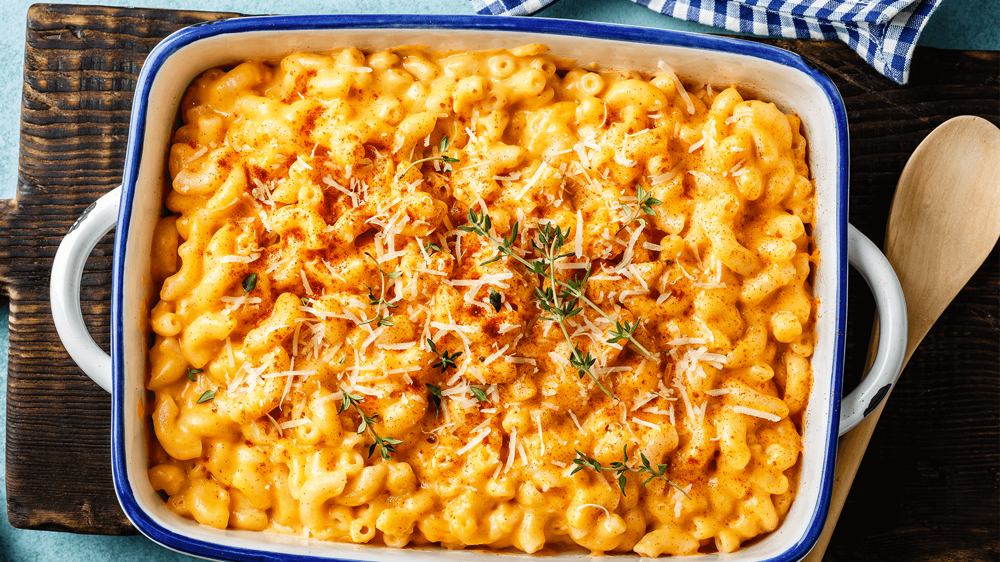

Minu Lemmik Retsept
Makaronid Juustukastmega

ALLIKAS
| Koostisosad |
Kogus |
| Makaronid |
400g |
| Või |
4sl |
| Jahu |
1dl(60g) |
| Piim |
5dl |
| Dijoni Sinep |
1sl |
| Riivitud Cheddari Juust |
200g |
| Vürtsikaste-nt Tabasco |
0,25-0,5tl |
| Soola ja musta Pipart |
Tunde järgi ;) |
- Keeda makaronid soolaga maitsestatud vees al dente, nõruta.
- Samal ajal sulata potis või. Vispelda juurde jahu ja kuumuta segades 1 minut. Lisa piim, vispelda hoolega. Kuumuta kaste keemiseni ja keeda 1 minut.
- Võta pott tulelt, sega juurde sinep, pipar ja vürtsikaste. Lisa riivitud juustud, sega sulamiseni. Maitsesta vajadusel soolaga.
- Sega kaste ja makaronid omavahel ja serveeri kohe.